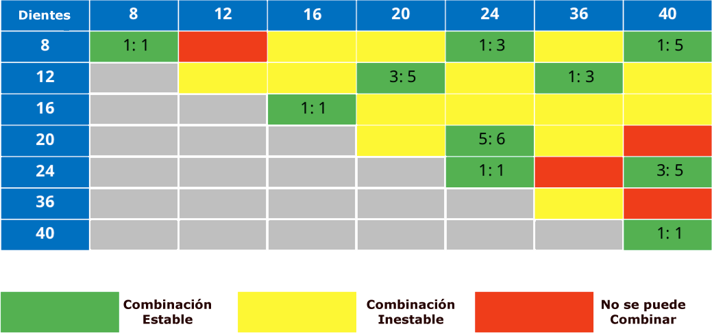
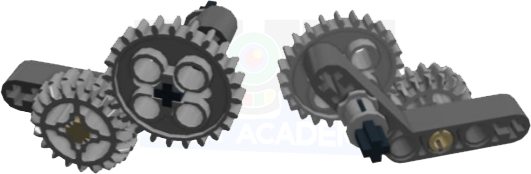
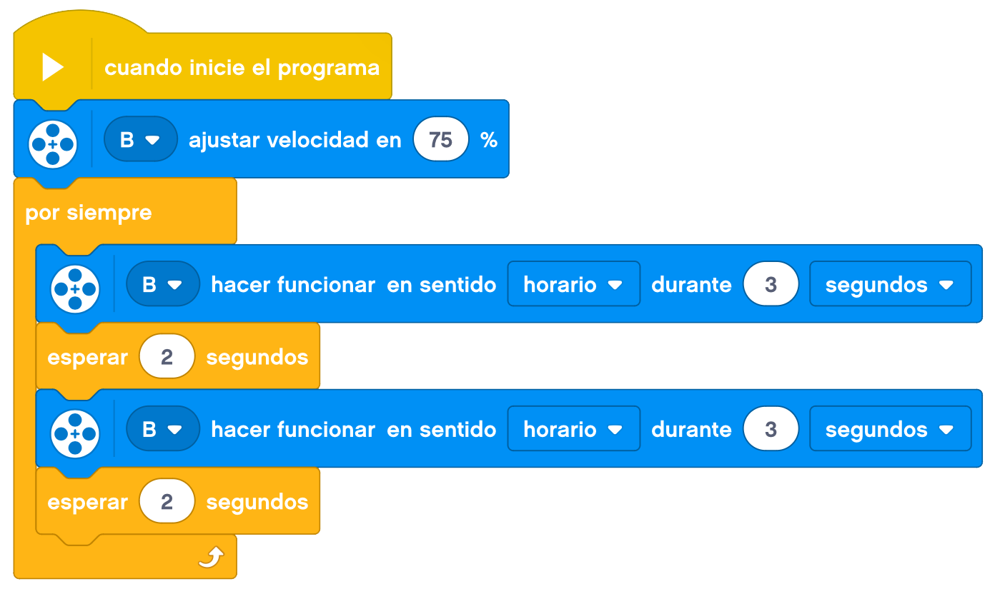
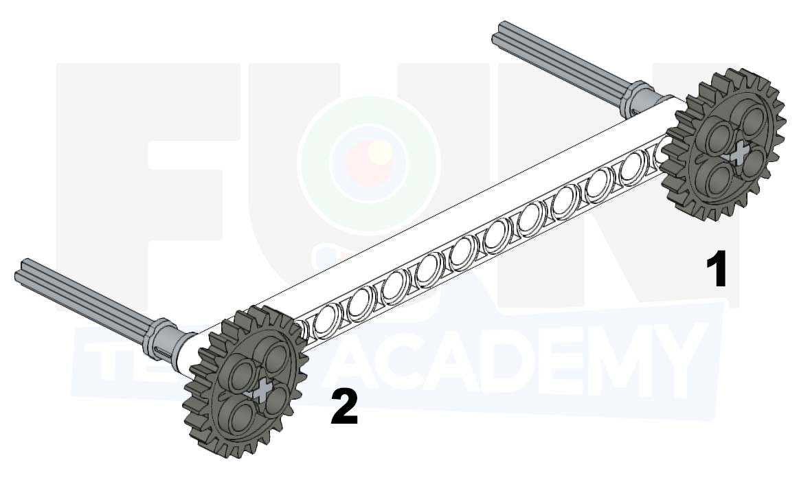
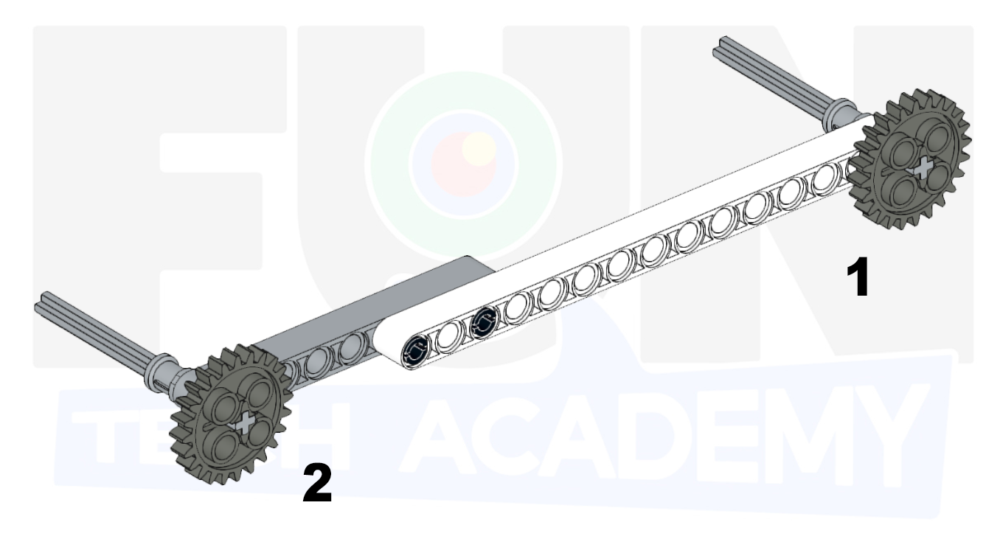
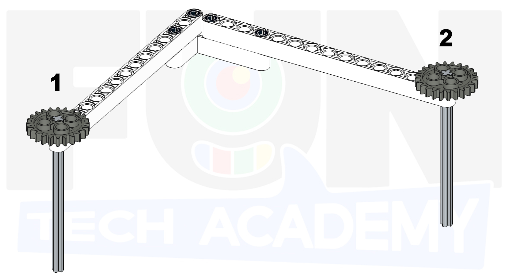
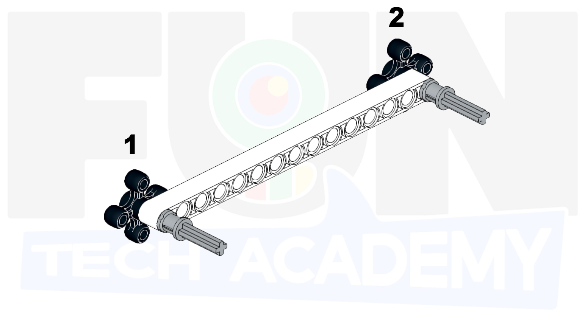

En esta actividad veremos la forma de unir distintos engranajes y ver que pasa con la velocidad y la fuerza.
Las distintas combinaciones de engranajes que podemos realizar con el contenido de la caja y dependiendo del
número de dientes de cada engranaje son:

Los engranajes son ruedas dentadas que encajan con otros engranajes.
Los engranajes sirven principalmente para:
• Cambiar la velocidad
• Cambiar el torque (fuerza de rotación)
• Cambiar la dirección de rotación de los ejes.
Vamos a construir tres ejemplos básicos del uso de engranajes.
En el primero vamos a unir dos engranajes del mismo número de dientes sobre una viga recta. Esto lo que hará
es que el movimiento que apliquemos a uno de los engranajes hará mover el otro a la misma velocidad pero en
sentido contrario.
La segunda combinación, la haremos sobre una viga en ángulo. En este caso lo haremos con engranajes de distintos dientes. ¿Ves cual es la diferencia del movimiento de un engranaje respecto del otro dependiendo de qué engranaje hagamos girar?

Para ver esa diferencia en el movimiento de los engranajes, hagámoslo más evidente.
Para la tercera combinación cogeremos uno de los engranajes pequeños junto con otro más grande u los
pondremos juntos en una viga recta. ¿Ves ahora qué es lo que pasa con respecto al movimiento cuando movemos
uno o el otro?
Vamos a construir un pequeño artilugio para ver mejor lo que pasa cuando mezclamos engranajes con distintas cantidades de dientes.
Si probamos a dar vueltas a la manivela, veremos como la pieza enganchada al engranaje pequeño gira mucho más rápido.
Conclusión: La relación entre dos engranajes, viene dada por el número de dientes. Suponiendo que unimos dos
engranajes, uno de 40 dientes y otro de 8, la relación sería de 40 a 8 o, simplificando 5 a 1.
La relación de engranaje proporciona el cambio en la velocidad y torque (fuerza de rotación) de los ejes de
rotación.
Esto significa que cuando el engranaje grande haya dado un giro completo (una vuelta) el engranaje pequeño
habrá dado 5. El engranaje pequeño irá 5 veces más rápido
Pero, también significa que el eje del engranaje grande tiene 5 veces el torque del eje con el engranaje
pequeño.
Esto quiere decir que si en en el eje de engranaje pequeño (engranaje de entrada) pusieramos el motor y en
el eje de engranaje grande (engranaje de salida) pusieramos la rueda, lo que estariamos logrando en nuestro
robot es que sea 5 veces más fuerte en la rotación de la rueda pero a su vez 5 veces más lento.
Vamos a montar un artilugio que nos permite ver con un motor y a una velocidad en concreto como aumenta y disminuye la velocidad dependiendo de la relación entre los engranajes.
Con este montaje podemos mover el eje hacia un lado y hacia el otro para ver como aumenta o disminuye la velocidad con respecto a la velocidad del motor
El primer reto consiste en mover desde el engranaje 1 el engranaje 2 utilizando cualquier otro engranaje.

Una ejemplo de solución podría ser el siguiente, aunque puede haber muchas combinaciones de engranajes para poder realizar el reto.

El segundo reto consiste también en mover desde el engranaje 1 el engranaje 2 utilizando cualquier otro engranaje.

Otro ejemplo de solución salvando el desnivel sería este.
También en el siguiente reto tenemos que mover desde el engranaje 1 el engranaje 2 utilizando cualquier otro engranaje.

En este caso, tenemos que darnos cuenta, que la forma más corta entre los dos engranajes es la linea recta entre ellos. Un ejemplo de solución sería el siguiente.
Ahora moveremos desde el engranaje 1 el engranaje 2, pero solo podemos utilizar otros dos engranajes del mismo tipo. También podemos utilizar cualquier otro tipo de piezas (que no sean engranajes).

Montaremos un eje que traslade el movimiento de un lado al otro.
En este reto volveremos a mover desde el engranaje 1 el engranaje 2, pero solo podemos utilizar otros dos engranajes del mismo tipo, además de cualquier otro tipo de piezas.

Como en el reto 3, tenemos que darnos cuenta que el punto más corto entre los dos engranajes es la linea recta entre ellos. Montaremos etre esos dos puntos un eje como en el reto anterior.